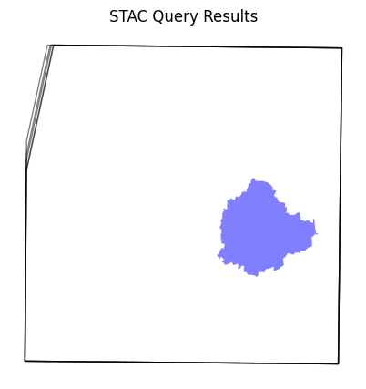
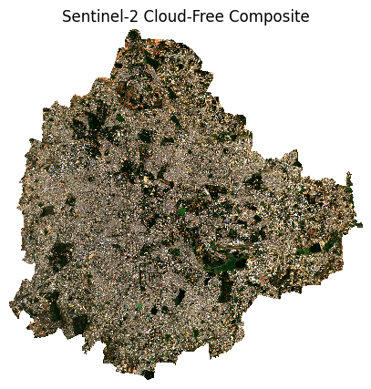

Creating a Median Composite with Dask#
Introduction#
When working with optical satellite imagery, one of the first pre-processing step is to apply a cloud-mask on individual satellite scenes and create a cloud-free composite image for the chosen time period. Doing this in the traditional way requires you to download large satellite scenes, read them into memory and iteratively process them. This is not very efficient and does not leverage all the resources your computer has to offer. We can instead leverage modern cloud-native data formats, such a Cloud-Optimized GeoTIFFs (COGs) that can efficiently stream only the required pixels, process the time-series of scenes using XArray that uses vectorized operations to efficiently process the whole stack, and use Dask to run the computation in parallel across all the CPU cores. This modern approach makes data processing tasks easy, efficient and fun.
Overview of the Task#
We will query a STAC catalog for Sentinel-2 imagery over the city of Bengaluru, India, apply a cloud-mask and create a median composite image using distributed processing on a local machine.
Input Layers:
bangalore.geojson: A GeoJSON file representing the municipal boundary for the city of Bengaluru, India.
Output Layers:
composite.tif: A Cloud-optimized GeoTIFF (COG) of Sentinel-2 composite image for January 2025.
Data Credit:
Bangalore Ward Maps Provided by Spatial Data of Municipalities (Maps) Project by Data{Meet}.
Sentinel-2 Level 2A Scenes: Contains modified Copernicus Sentinel data (2025-02)
Running the Notebook:
The preferred way to run this notebook is on Google Colab.

Setup and Data Download#
The following blocks of code will install the required packages and download the datasets to your Colab environment.
%%capture
if 'google.colab' in str(get_ipython()):
!pip install pystac-client odc-stac rioxarray dask jupyter-server-proxy
from odc.stac import stac_load
import geopandas as gpd
import matplotlib.pyplot as plt
import os
import pystac_client
import rioxarray as rxr
import xarray as xr
data_folder = 'data'
output_folder = 'output'
if not os.path.exists(data_folder):
os.mkdir(data_folder)
if not os.path.exists(output_folder):
os.mkdir(output_folder)
def download(url):
filename = os.path.join(data_folder, os.path.basename(url))
if not os.path.exists(filename):
from urllib.request import urlretrieve
local, _ = urlretrieve(url, filename)
print('Downloaded ' + local)
data_url = 'https://github.com/spatialthoughts/geopython-tutorials/releases/download/data/'
filename = 'bangalore.geojson'
download(data_url + filename)
Setup a local Dask cluster. This distributes the computation across multiple workers on your computer.
from dask.distributed import Client, progress
client = Client() # set up local cluster on the machine
client
If you are running this notebook in Colab, you will need to create and use a proxy URL to see the dashboard running on the local server.
if 'google.colab' in str(get_ipython()):
from google.colab import output
port_to_expose = 8787 # This is the default port for Dask dashboard
print(output.eval_js(f'google.colab.kernel.proxyPort({port_to_expose})'))
Search and Load Sentinel-2 Scenes#
Read the file containing the city boundary.
aoi_file = 'bangalore.geojson'
aoi_filepath = os.path.join(data_folder, aoi_file)
aoi = gpd.read_file(aoi_filepath)
geometry = aoi.geometry.union_all()
geometry
Let’s use Element84 search endpoint to look for items from the sentinel-2-c1-l2a collection on AWS. We search for the imagery collected within the date range and intersecting the AOI geometry.
We also specify additonal filters to select scenes based on metadata. The parameter eo:cloud_cover contains the overall cloud percentage and we use it to select imagery with < 30% overall cloud cover.
Our region of interest has overlapping scenes from multiple MGRS grid tiles, so we can specify an additional filter using the metadata mgrs:grid_square to select tiles only from one of the grids. You will need to update this for your region of interest.
catalog = pystac_client.Client.open(
'https://earth-search.aws.element84.com/v1')
# Search for images from January 2025
year = 2025
month = 1
time_range = f'{year}-{month:02}'
filters = {
'eo:cloud_cover': {'lt': 30},
'mgrs:grid_square': {'eq': 'GQ'}
}
search = catalog.search(
collections=['sentinel-2-c1-l2a'],
intersects=geometry,
datetime=time_range,
query=filters,
)
items = search.item_collection()
len(items)
5
Visualize the resulting image footprints. You can see that our AOI covers only a small part of a single scene. When we process the data for our AOI - we will only stream the required pixels to create the composite instead of downloading entire scenes.
items_df = gpd.GeoDataFrame.from_features(items.to_dict(), crs='EPSG:4326')
fig, ax = plt.subplots(1, 1)
fig.set_size_inches(5,5)
items_df.plot(
ax=ax,
facecolor='none',
edgecolor='black',
alpha=0.5)
aoi.plot(
ax=ax,
facecolor='blue',
alpha=0.5
)
ax.set_axis_off()
ax.set_title('STAC Query Results')
plt.show()

Load the matching images as a XArray Dataset.
ds = stac_load(
items,
bands=['red', 'green', 'blue', 'scl'],
resolution=10,
bbox=geometry.bounds,
chunks={}, # <-- use Dask
groupby='solar_day',
)
ds
<xarray.Dataset> Size: 431MB
Dimensions: (y: 3465, x: 3553, time: 5)
Coordinates:
* y (y) float64 28kB 1.455e+06 1.455e+06 ... 1.42e+06 1.42e+06
* x (x) float64 28kB 7.667e+05 7.667e+05 ... 8.022e+05 8.022e+05
spatial_ref int32 4B 32643
* time (time) datetime64[ns] 40B 2025-01-07T05:25:20.058000 ... 202...
Data variables:
red (time, y, x) uint16 123MB dask.array<chunksize=(1, 3465, 3553), meta=np.ndarray>
green (time, y, x) uint16 123MB dask.array<chunksize=(1, 3465, 3553), meta=np.ndarray>
blue (time, y, x) uint16 123MB dask.array<chunksize=(1, 3465, 3553), meta=np.ndarray>
scl (time, y, x) uint8 62MB dask.array<chunksize=(1, 3465, 3553), meta=np.ndarray>We first convert the Dataset it to a DataArray using the to_array() method. All the variables will be converted to a new dimension. Since our variables are image bands, we give the name of the new dimesion as band.
da = ds.to_array('band')
da
<xarray.DataArray (band: 4, time: 5, y: 3465, x: 3553)> Size: 492MB
dask.array<stack, shape=(4, 5, 3465, 3553), dtype=uint16, chunksize=(1, 1, 3465, 3553), chunktype=numpy.ndarray>
Coordinates:
* y (y) float64 28kB 1.455e+06 1.455e+06 ... 1.42e+06 1.42e+06
* x (x) float64 28kB 7.667e+05 7.667e+05 ... 8.022e+05 8.022e+05
spatial_ref int32 4B 32643
* time (time) datetime64[ns] 40B 2025-01-07T05:25:20.058000 ... 202...
* band (band) object 32B 'red' 'green' 'blue' 'scl'Apply a Cloud Mask#
Use the SCL (Scene Classification Map) band to select non-cloud pixels and use XArray .where() to mask cloudy pixels. XArray uses a vectorized operation to apply the condition across the entire stack of scenes using their corresponding SCL bands - without neededing to iterate over each scene individually.
scl = da.sel(band='scl')
valid = ((scl <= 7) | (scl >= 10))
da_masked = da.where(valid)
Create a Median Composite#
A very-powerful feature of XArray is the ability to easily aggregate data across dimensions - making it ideal for many remote sensing analysis. Let’s create a median composite from all the individual images.
We apply the .median() aggregation across the time dimension.
rgb_composite = da_masked \
.sel(band=['red', 'green', 'blue']) \
.median(dim='time')
rgb_composite
<xarray.DataArray (band: 3, y: 3465, x: 3553)> Size: 148MB
dask.array<nanmedian, shape=(3, 3465, 3553), dtype=float32, chunksize=(1, 2558, 2623), chunktype=numpy.ndarray>
Coordinates:
* y (y) float64 28kB 1.455e+06 1.455e+06 ... 1.42e+06 1.42e+06
* x (x) float64 28kB 7.667e+05 7.667e+05 ... 8.022e+05 8.022e+05
spatial_ref int32 4B 32643
* band (band) object 24B 'red' 'green' 'blue'So far all the operations that we have created a computation graph. To run this computation using the local Dask cluster, we must call .compute().
%%time
rgb_composite = rgb_composite.compute()
CPU times: user 6.88 s, sys: 1.55 s, total: 8.42 s
Wall time: 39.3 s
Visualizing and Exporting the Results#
The composite is creating from all the pixels within the bounding box of the geometry. We can use rioxarray to clip the image to the city boundary to remove pixels outside the polygon.
image_crs = rgb_composite.rio.crs
aoi_reprojected = aoi.to_crs(image_crs)
rgb_composite_clipped = rgb_composite.rio.clip(aoi_reprojected.geometry)
Plot the results.
fig, ax = plt.subplots(1, 1)
fig.set_size_inches(5,5)
rgb_composite_clipped.sel(band=['red', 'green', 'blue']).plot.imshow(
ax=ax,
robust=True)
ax.set_title('Sentinel-2 Cloud-Free Composite')
ax.set_axis_off()
plt.show()

We finally save the results as a local Cloud-Optimized GeoTIFF file.
output_file = f'composite_{time_range}.tif'
output_path = os.path.join(output_folder, output_file)
rgb_composite_clipped.rio.to_raster(output_path, driver='COG')
print(f'Wrote {output_file}')
If you want to give feedback or share your experience with this tutorial, please comment below. (requires GitHub account)